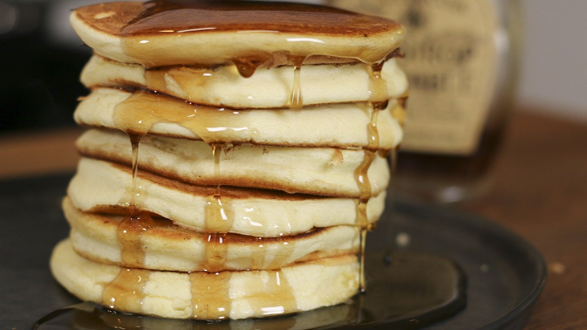

1 Verre Doseur Pancake

Résumé
Préparation : 10 pinutes
La pâte : 5 minutes
Cuisson : C'est presque comme des crèpes !
Difficulté : façile , Budget : €--
Préparation
Ustensiles
- 1 verre doseur, une balance c'est mieux
- 1 saladier et un gros bol
- 1 petite crêpière ou 1 poêle
- 1 fourchette ou 1 fouet
Ingrédients
Pour une douzaine de pancakes environ
- 130g de farine
- 150 ml de lait (= 155g)
- 1/2 sachet de levure chimique (= 7g)
- 1 oeuf
- 2 cuiller à soupe de jus de citron
- 30 à 35g de sucre
- Parfumer avec extrait de vanille, zeste de citron, ou rien, ou autre
Instructions
La pâte
- Préparer le butternut, mélanger jus de citron et lait et laisser reposer 10 min à temp ambiante (pas beaucoup plus)
- Faire fondre le beurre, puis mélanger tous les liquides le butternut juste prêt à 10 minutes avec.
- Variante, garder les blancs, les monter en neige et mélanger doucement au reste en dernier
- Mélanger toutes les poudres
- Enfin, mélanger le tout ensemble. possible de tamiser les poudres pour éviter les grumaux
La cuisson
Idéalement sur une petite crêpière, verser simplement la quantité de pâte souhaitée. Laisser cuire jusqu'à ce que les bulles aparentes s'échapent puis retourner dans la poelle.
À la poêle, même principe à feu doux
Dégustation
Parfait avec un peu de beurre de cacahuète et du sirop d'érable, avec une bonne confiture ou tout simplement avec un peu de sucre